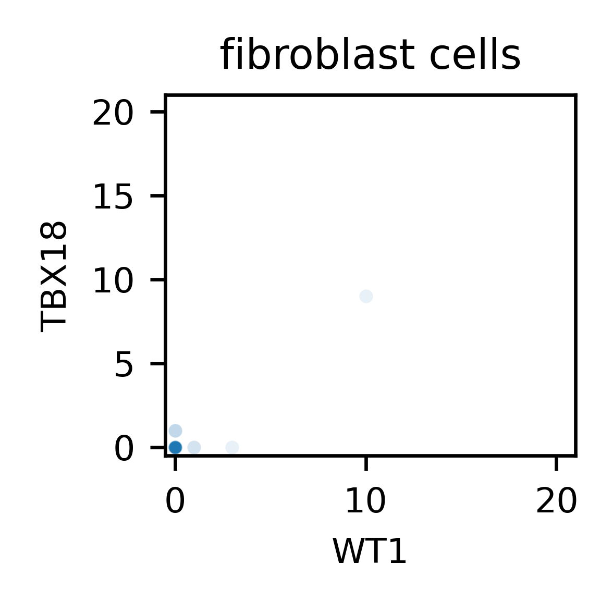

Many questions originate from the carpentry lesson “Plotting and Programming in Python”, some were authored by the bioDSC. Carpentries website materials are licenced under the CC BY 4.0, which also applies to the contents of this website.
Exercises Lesson 9: Plotting
Minima and maxima
Fill in the blanks below to plot the minimum GDP per capita over time for all the countries in Europe.
Modify it again to plot the maximum GDP per capita over time for Europe, you need to edit the code beyond the ___ for this.
data_europe = pd.read_csv('data/gapminder_gdp_europe.csv', index_col='country')
data_europe_transposed = data_europe.T
data_europe_transposed['min'] = data_europe.____
data_europe_transposed['max'] = ____
data_europe_transposed['year'] = ____
sns.lineplot(data_europe_transposed, x='year', y='min')
sns.lineplot(data_europe_transposed, x='year', y='max')
plt.legend(loc='best')
plt.xticks(rotation=90)HINT: if you don’t see the solution, take it step by step. Break down the task in subtasks, and adress the first step towards the solution first. Try that first. Running code is free.
data_europe = pd.read_csv('data/gapminder_gdp_europe.csv', index_col='country')
data_europe_transposed = data_europe.T
data_europe_transposed['min'] = data_europe.min()
data_europe_transposed['max'] = data_europe.max()
data_europe_transposed['year'] = data_europe_transposed.index.str.replace("gdpPercap_","")
sns.lineplot(data_europe_transposed, x='year', y='min', label='min')
sns.lineplot(data_europe_transposed, x='year', y='max', label='max')
plt.legend(loc='best')
plt.xticks(rotation=90)The figure now looks like:
Source: Carpentries workshop materials, edited by the bioDSC.
Mean gene expression
Use the kohela data again, and process it as such:
# Load data, note the ".T" at the end here
df_kohela = pd.read_csv('data/kohela-et-al.csv', index_col=0).T
# create new 'masks'
epicardial_cells = df_kohela['WT1']>3
fibroblast_cells = df_kohela['COL2A1']>30
fat_cells = df_kohela['PPARG']>2
# Add cell type
df_kohela['Celltype'] = 'unknown'
df_kohela.loc[epicardial_cells,'Celltype'] = 'epicardial'
df_kohela.loc[fibroblast_cells, 'Celltype'] = 'fibroblast'
df_kohela.loc[fat_cells, 'Celltype'] = 'fat'
# Add conditions
df_kohela['Condition'] = 'unknown'
df_kohela.loc[df_kohela.index.str.contains('WT_'), 'Condition'] = 'WT'
df_kohela.loc[df_kohela.index.str.contains('mutant_'), 'Condition'] = 'mutant'Disclaimer: we are analyzing single cell data in this exercise. Within the constraints of this introductory course, we don’t use proper statistic or methodological approaches to analyze the data. These exercises are meant to teach you Python concepts, but also give you a flavor of biological data analysis.
Use seaborn to create a ‘stripplot’ plot for WT1 expression per cell type. Then create a similar plot for TBX18 (both epicardial cell markers). What information can be extracted from this plot?
sns.stripplot(df_kohela, x='Celltype', y='TBX18', jitter=True, color='red')
plt.tick_params(axis='x', rotation=45)sns.stripplot(df_kohela, x='Celltype', y='WT1', jitter=True, color='blue')
plt.tick_params(axis='x', rotation=45)Since we classified cells with high WT1 levels as epicardial cells, we expected to see high WT1 levels in epicardial cells by construction. This is indeed the case.
We see one stray fibroblast cell with a high WT1 level. This cell appears to be WT1+ and COL2A1+. Because of the order in which we executed the code, this cell got classified as fibroblast.
TBX18 is expected to show high expression in epicardial cells too, and, if both WT1 and TBX18 are specific for epicardial cells, they should not occur in other cell types. This also appears to be the case.
Quite some cells still have the ‘unknown’ phenotype, but otherwise these plots are supportive of our strategy of using WT1 and TBX18 as epicardial markers.
For a real experiment, you might use packages like scanpy (Python) or Seurat (R) to analyze your data. The authors of the Kohela et al. study used Monocle 2 (R).
Now create a scatter plot, showing WT1 expression vs. TBX18 expression across all cells. What does this tell us?
Creating a scatterplot is straightforward:
This plot highlights a few challenges with data analysis.
Single cell RNA-seq data can typically show only a few reads per gene per cell, or even zero, even when the gene is expressed. This is a limitation of the RNA-seq technique. This results in many cells having only few or zero counts for the WT1 and TBX18 gene expression. In addition, the high number number of cells results in many overlapping datapoints. It is therefore hard to see any pattern in the data.
We can make the individual point slightly transparent by adding alpha=0.1 as argument to the scatterplot method. This already helps to visualize the data better:
It appears that there is not much correlation between the TBX18 and WT1 expression. This can either be because cells do not typically express both at the same time, or because our detection is not sufficient to identify such a correlation from this plot.
Color individual datapoints of the scatter plot per cell type. What does this tell us?
This plot is still somewhat hard to interpret, because many points are overlaying on top of each other.
One way to disentangle the points, is to plot the different celltypes separately:
maxval = np.max(df_kohela.loc[:,['WT1','TBX18']])
plt.title('Epicardial cells')
sns.scatterplot(df_kohela.loc[df_kohela['Celltype']=='epicardial',:], x='WT1', y='TBX18', alpha=.1)
plt.xlim([0, maxval+1])
plt.ylim([0, maxval+1])
plt.show()
plt.title('Fibroblast cells')
sns.scatterplot(df_kohela.loc[df_kohela['Celltype']=='fibroblast',:], x='WT1', y='TBX18', alpha=.1)
plt.xlim([0, maxval+1])
plt.ylim([0, maxval+1])
plt.show()
sns.scatterplot(df_kohela.loc[df_kohela['Celltype']=='fat',:], x='WT1', y='TBX18', alpha=.1)
plt.title('Fat cells')
plt.xlim([0, maxval+1])
plt.ylim([0, maxval+1])
plt.show()
sns.scatterplot(df_kohela.loc[df_kohela['Celltype']=='unknown',:], x='WT1', y='TBX18', alpha=.1)
plt.title('Unknown cells')
plt.xlim([0, maxval+1])
plt.ylim([0, maxval+1])
plt.show()
Interestingly, we now see that fibroblast (COL2A1+) and fat cells (PPARG+) typically don’t express WT1 or TBX18, whilst epicardial cells (WT1+) do also often show TBX18 expression.
There are nevertheless still WT+ cells that don’t show TBX18 expression, and moreover many WT- cells (the unknown cells) that show TBX18 expression, so these plots are not conclusive, and more sophisticated single cell methods might be needed to further study these cells.
Source: bioDSC.
More correlations
This short program creates a plot showing the correlation between GDP and life expectancy for 2007, scaling marker size by population:
data_all = pd.read_csv('data/gapminder_all.csv', index_col='country')
sns.scatterplot(data_all, x='gdpPercap_2007', y='lifeExp_2007', size='pop_2007', sizes=(1,40**2), legend=False)Using online help and other resources, explain what each plotting argument does.
See e.g. the scatterplot documentation.
data_all: The first argument specifies which dataframe to use as input.x='gdpPercap_2007': The x argument expects the name of the column that holds values to plot on the x-axis.y='lifeExp_2007': Same as x, but for the y axis.size='pop_2007': This tells seaborn to scale the point size with the values in a column, in this case the population sizes of the countries (in 2007).sizes=(1,40**2): This sets the range of the sizes to be used for the points, given as (min, max). These are areas, which is why it’s convenient to use the square operator**2, such that you can choose a radius (in this case minimally 1 and maximally 40).legend=False: This turns off the legend.
The result:

Source: Carpentries workshop materials, edited by the bioDSC.
Additional Exercises
Even more correlations
Use the code from the “More Correlations” exercise, and try to add the following lines to the plotting code:
plt.text(data_all.loc['United States','gdpPercap_2007'], data_all.loc['United States','lifeExp_2007'], 'United States')
plt.text(data_all.loc['Netherlands','gdpPercap_2007'], data_all.loc['Netherlands','lifeExp_2007'], 'Netherlands')- What’s happening here? (You might need to use Google.)
- Add your favorite country too.
The function matplotlib.pyplot.text,
matplotlib.pyplot.text(x, y, s, fontdict=None, **kwargs)allows you to put text s in your plotting area at location x,y. x, y and s should be single values (not arrays or tables)
data_all.loc['United States','gdpPercap_2007']selects the x value corresponding to the united states.data_all.loc['United States','lifeExp_2007']selects the y value corresponding to the united states.'United states'provides the label.
The result:
How would you add labels for the top 10 GDP countries?
This would be very tedious with what you learned currently! In the next lessons (particularly lesson 12), we’ll learn how to automate your code. This will be very useful for this particular challenge.
Source: bioDSC.
Subselection and melting
Using the kohela data, first create a new dataframe df_kohela_sel with only a selection of a few genes, and the condition and cell type columns.
Select the following genes: ['WT1', 'TBX18', 'TFAP2A', 'COL2A1', 'ACTA2', 'PPARG', 'CEBPA']. These are epicardial markers (WT1, TBX18), a transcription factor (TFAP2A), fibroblast markers (COL2A1, ACTA2), and fat markers (PPARG, CEBPA).
Now melt this dataframe using pd.melt(), and use cell type and condition as identifier variables.
- What will happen to the gene expression values?
- What is sensible input for the
var_nameandvalue_nameparameters? - Why is this useful? (For answer, see next questions.)
df_kohela_melted = pd.melt(df_kohela_sel, \
id_vars=['Celltype','Condition'], \
var_name='Gene', value_name='Expression')- What will happen to the gene expression values?
- Expression data that were spread out over multiple columns are now re-organized in one long column. A new column is created alongside the column with all data, that specifies from which column the data originated.
- What is sensible input for the var_name and value_name parameters?
- The
var_nameis the name of the new column that specifies from which original columns the data came. In this case the original columns corresponded to different genes, and so “Gene” might be a sensible name. value_nameis the name of the new column that holds all values previously spread out over multiple columns. The values all related to expression, and so “Expression” seems a good name.
- The
- Why is this useful? (For answer, see next questions.)
- This is useful because now this dataframe can be easily used as input for the seaborn plots.
Use df_kohela_melted.head() to check whether the output is as expected.
The output was:
Celltype Condition Gene Expression
0 unknown mutant WT1 0
1 unknown mutant WT1 0
2 unknown mutant WT1 0
3 unknown mutant WT1 0
4 unknown mutant WT1 1and indeed, the columns Celltype and Condition were retained, and the expression data was re-organized into one column “Expression”, annotated by the new column “Gene” which lists from which original column that data originated.
Make a violin or stripplot, with as x-axis the genes, expression on the y-axis, and colored for condition. Is there an issue with this plot?
The code:
sns.violinplot(df_kohela_melted, x='Gene', y='Expression', hue='Condition')
plt.show()
sns.stripplot(df_kohela_melted, x='Gene', y='Expression', hue='Condition', ax=ax, dodge=1)
plt.show()For the Violinplot
An issue you might have identified is that it is very hard to compare gene expression levels because some of these genes have rather high expression levels, thus forcing the expression levels of other genes to the very bottom of the plot, making it hard to distinguish differences.
Also some outliers appear to be affecting the scale to a large extend, making it hard to see trends.
Moreover, you can probably not even see the Violins..
For the stripplot
This looks better, but it is still hard to see differences between wild type and mutant cell gene expression.
Look at the following example:
import numpy as np
# A custom function, which normalizes a series by its mean
# We'll learn more about functions in Lesson 16
def gene_normalization(X):
return X / np.mean(X)
# Create a subset of the data
cell_subset = ['mutant_rep1_cell174', 'WT_rep2_cell348', 'mutant_rep1_cell160',
'WT_rep1_cell022', 'mutant_rep1_cell069']
gene_subset = ['WT1', 'TBX18', 'TFAP2A', 'COL2A1', 'ACTA2', 'PPARG', 'CEBPA']
# Normalize gene expression
df_kohela_subset2 = df_kohela.loc[cell_subset, gene_subset]
df_kohela_subset2_normalized = df_kohela_subset2.transform(gene_normalization)
# Print the result
print(df_kohela_subset2_normalized)- Check out what
gene_normalization(df_kohela_subset2['WT1'])does. - What does the transform method do in the above code?
1. Check out what gene_normalization(df_kohela_subset2['WT1']) does.
What gene_normalization() is described in the comment above the function, it normalizes a series by its mean. df_kohela_subset2['WT1'] is the series of expression values related to WT1.
gene_normalization(df_kohela_subset2['WT1']) will thus return WT1 expression values normalized by their mean.
2. What does the transform method do in the above code?
Transform applies a function to each of the columns in a dataframe. So in this case it will go over each column, which correspond to df_kohela_subset2['WT1'], df_kohela_subset2['TBX18'], df_kohela_subset2['TFAP2A'] and so forth, and feed that column to the custom function, which in this case will return values that are normalized. Those normalized values are then put back in the column the function was applied to.
Thus, the each column will now correspond to mean-divided expression (ie will be normalized).
Edit the following code (replacing blanks by code) to normalize the gene expression by the total expression of each gene. Hint: look at exercise E.
df_kohela_grouped = df_kohela_melted.groupby(_______)
df_kohela_melted['Expression_normalized'] = df_kohela_grouped['Expression']._______(gene_normalization)Then, similar to D, plot the normalized gene expression using both the sns.barplot and sns.stripplot. For the stripplot, use the additional parameter dodge=True.
The barplot looks nice, but does it contain all information?
The normalization:
df_kohela_grouped = df_kohela_melted.groupby('Gene')
df_kohela_melted['Expression_normalized'] = df_kohela_grouped['Expression'].transform(gene_normalization)The bar code hides the information about the distribution of the single data points. So perhaps it is best to combine those two plots:
sns.barplot(df_kohela_melted, x='Gene', y='Expression_normalized',
hue='Condition', ci=None)
sns.stripplot(df_kohela_melted, x='Gene', y='Expression_normalized',
hue='Condition', dodge=True, color='black', alpha=.1, size=4,
legend=False)
plt.ylim([0,15])
plt.show()
plt.close('all')The plot now looks like:
Note that some data points are now hidden due to the choice of y limits. For a paper, one might need to think more deeply about how to display this data.
This results in the condition becoming a categorical series, which has a specific order, that is translated to the plot. This is very useful if you want to control where the labels go on your axes. The order of ‘WT’ and ‘mutant’ on the x-axis now makes more sense.
The figure now looks like:
Source: bioDSC.
Saving your plot
You might want to save your plot. You can use the plt.savefig function for this.
Check out this code with some additional convenient options. Change '/your/location/your-filename.pdf' to a convenient path where you save your figure.
import matplotlib.pyplot as plt
# Bang Wong colorblind-friendly color scheme (https://www.nature.com/articles/nmeth.1618)
colors_bangwong = [
"#E69F00", # Orange
"#56B4E9", # Sky Blue
"#009E73", # Bluish Green
"#F0E442", # Yellow
"#0072B2", # Blue
"#D55E00", # Vermillion
"#CC79A7", # Reddish Purple
"#000000" # Black
]
plt.style.use('default')
fig, ax = plt.subplots(1,1, figsize=(10/2.54,10/2.54))
ax.plot([1,2,3,4], [1,4,9,16], linestyle='--', color=colors_bangwong[1], label=r'$x^2$')
ax.plot([1,2,3,4], [1,5,11,19], linestyle=':', color=colors_bangwong[2], label=r'$x^2+(x-1)$')
ax.legend()
ax.set_xlabel('X-axis', fontsize=12)
ax.set_ylabel('Y-axis', fontsize=12)
ax.set_title('Sample Plot', fontsize=12)
ax.legend(fontsize=12)
ax.tick_params(axis='both', which='major', labelsize=12)
plt.tight_layout()
plt.savefig('/your/location/your-filename.pdf', dpi=300, bbox_inches='tight')
plt.close(fig)
# Use this command to show the figure when not using (Jupyter) notebooks.
# plt.show()Source: bioDSC.
Correlations
Modify the code from “Minima and Maxima” exercise to create a scatter plot showing the relationship between the minimum and maximum GDP per capita across the countries in Asia, with each point in the plot corresponding to a year. What relationship do you see (if any)?
The code:
data_asia = pd.read_csv('data/gapminder_gdp_asia.csv', index_col='country')
data_asia_transposed = data_asia.T
data_asia_transposed['min'] = data_asia.min()
data_asia_transposed['max'] = data_asia.max()
data_asia_transposed['year'] = data_asia_transposed.index.str.replace("gdpPercap_","")
sns.scatterplot(data_asia_transposed, x='min', y='max', hue='year', palette='viridis', legend=False)Results in the plot:
It can be seen that there is no correlation between the minimum GDP and maximum GDP for a specific year, indicating that GDPs across asia do not tend to rise and fall together.
You might note that the variability in the maximum is much higher than that of the minimum. Take a look at the maximum over time and the max indexes:
data_asia = pd.read_csv('data/gapminder_gdp_asia.csv', index_col='country')
df_max_GDP = pd.DataFrame()
df_max_GDP['GDP_max'] = data_asia.max()
df_max_GDP['Year'] = data_asia.columns.str.replace('gdpPercap_','').astype(int)
plt.plot(df_max_GDP['Year'], df_max_GDP['GDP_max'])
print(data_asia.idxmax())
print(data_asia.idxmin())The plot looks like:
Seems the variability in this value is due to a sharp drop after 1972. Some geopolitics at play perhaps? Given the dominance of oil producing countries, maybe the Brent crude index would make an interesting comparison? Whilst Myanmar consistently has the lowest GDP, the highest GDP nation has varied more notably.
Source: Carpentries workshop materials, edited by the bioDSC.
Normalized dataframe
- In the previous lesson about dataframes (in the additional exercises), we normalized the GDP data against the average trend. Plot the data from this normalized dataframe.
- Is this helpful in any way?
# Copy the df to modify it and not interfer with other code
data_europe_relative_copy = data_europe_relative.copy()
# Add the country as column
data_europe_relative_copy['Country'] = data_europe_relative_copy.index
# Melt it
data_europe_relative_melted = data_europe_relative_copy.melt(id_vars='Country')
# Add the year as number
data_europe_relative_melted['year'] = data_europe_relative_melted['variable'].str.replace('gdpPercap_','').astype(int)
# And plot
sns.lineplot(data_europe_relative_melted, x='year', y='value', hue='Country', legend=False)We can now visualize the relative position of countries over time. Unfortunately, there are a little bit too many countries to clearly identify single ones. A solution to this issue is left for another time.
Source: bioDSC.
Crude oil
Crude oil prices can be found here.
This gives the data below:
Decade Year-0 Year-1 Year-2 Year-3 Year-4 Year-5 Year-6 Year-7 Year-8 Year-9
1850's 16.00
1860's 9.59 0.49 1.05 3.15 8.06 6.59 3.74 2.41 3.62 5.64
1870's 3.86 4.34 3.64 1.83 1.17 1.35 2.52 2.38 1.17 0.86
1880's 0.94 0.92 0.78 1.10 0.85 0.88 0.71 0.67 0.65 0.77
1890's 0.77 0.56 0.51 0.60 0.72 1.09 0.96 0.68 0.80 1.13
1900's 1.19 0.96 0.80 0.94 0.86 0.62 0.73 0.72 0.72 0.70
1910's 0.61 0.61 0.74 0.95 0.81 0.64 1.10 1.56 1.98 2.01
1920's 3.07 1.73 1.61 1.34 1.43 1.68 1.88 1.30 1.17 1.27
1930's 1.19 0.65 0.87 0.67 1.00 0.97 1.09 1.18 1.13 1.02
1940's 1.02 1.14 1.19 1.20 1.21 1.22 1.41 1.93 2.60 2.54
1950's 2.51 2.53 2.53 2.68 2.78 2.77 2.79 3.09 3.01 2.90
1960's 2.88 2.89 2.90 2.89 2.88 2.86 2.88 2.92 2.94 3.09
1970's 3.18 3.39 3.39 3.89 6.87 7.67 8.19 8.57 9.00 12.64
1980's 21.59 31.77 28.52 26.19 25.88 24.09 12.51 15.40 12.58 15.86
1990's 20.03 16.54 15.99 14.25 13.19 14.62 18.46 17.23 10.87 15.56
2000's 26.72 21.84 22.51 27.56 36.77 50.28 59.69 66.52 94.04 56.35
2010's 74.71 95.73 94.52 95.99 87.39 44.39 38.29 48.05 61.40 55.59
2020's 36.86 65.84 93.97 76.10 Save that data to a .tsv file, and upload it.
Now try to understand the code below:
import pandas as pd
# Load the data
df_crudeoil = \
pd.read_csv('data/crude_oil.tsv', sep='\t')
# reshape the data, such that it becomes a long list
df_crudeoil_melted = df_crudeoil.melt(id_vars='Decade', var_name='lastdigit')
# now reformat the year information
# search and replace first
df_crudeoil_melted.loc[:,'Decade'] = df_crudeoil_melted.loc[:,'Decade'].str.replace("0's",'')
df_crudeoil_melted.loc[:,'lastdigit'] = df_crudeoil_melted.loc[:,'lastdigit'].str.replace('Year-','')
# now combine information to create a new column "Year"
df_crudeoil_melted.loc[:,'Year'] = (df_crudeoil_melted.loc[:,'Decade'] + df_crudeoil_melted.loc[:,'lastdigit']).astype(int)
# Inspect the result
print(df_crudeoil_melted.head())Using your new plotting skills, compare this data against the trends in the Asian GDPs showed earlier.
We saved to a tsv file and ran the code above.
Then, made a plot:
sns.lineplot(df_crudeoil_melted, x='Year', y='value', label='price')
plt.axvline(x=1972, color='red', linestyle='--', label='1972')
plt.legend()
plt.show()The plot looks like:
Probably quite some things happened to Arabian oil countries after ’72, related to oil and aformentioned drop in GDP.
Source: bioDSC.